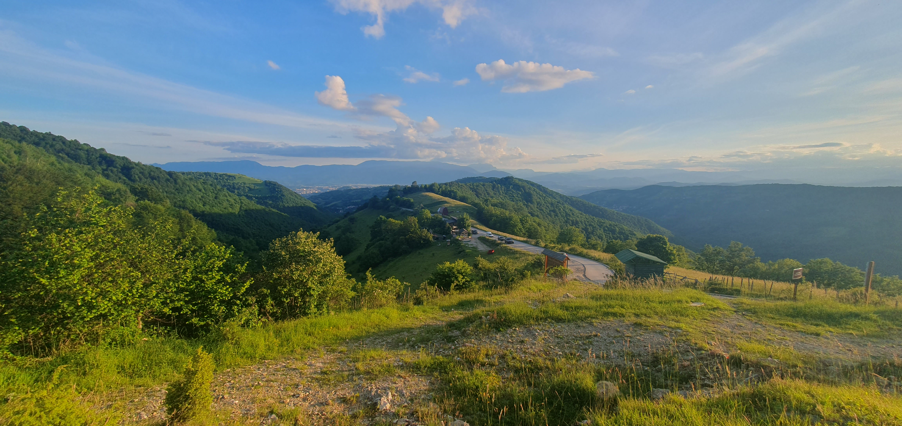

Conservation Genomics of Adders
ENS-1403 Practical Skills for Biologists
Dr Axel Barlow
email: a.barlow.@bangor.ac.uk
Conservation Genomics at Bangor

Conservation Genomics of Adders
- Conservation genetics
- Adder!
- Adder conservation genomics
Links to first year modules
- Conservation
- Genetics
- Evolution
- Cell biology
- Herpetology
Conservation genetics
Genome diversity

Loss of genetic diversity

- Small populations lose genetic diversity faster than it is replaced by mutation
- In Isolated populations variation cannot be replaced by gene flow
- Net loss of genetic diversity
Reduced evolutionary potential

- No variation = no evolution
- Unpredictable because we don't know the future precisely (disease, climate change, etc)
Inbreeding depression
- Deleterious gene variants tend to be recessive
- Heterozygous, one healthy gene copy and one deleterious gene copy = OK
- Homozygous, both gene copies deleterious = genetic disease
- When genetic diversity is low, genes are more likely to be homozygous

Smygehuk adders
- Population in Sweden
- Small populations size
- Isolated > 100 years
- low genetic diversity
- Population decline
- Many offspring deformed/stillborn

Genetic rescue

- 20 males from other (large) populations released
- Left for 4 years
- Remaining 8 males returned to source population
- Dramatic increase in recruitment
- Increase in genetic diversity
- Reduction in stillborn offspring
Smygehuk adders background reading
The adder, Vipera berus
Geographic distribution





Diet
- lizards
- frogs
- rodents
- subdued with venom
Not like a bee sting
Adder conservation genomics
Conservation situation in UK
Research questions

How genetically diverse are UK adders?
Do they show signs of inbreeding?
How genetically isolated are adder populations?
What does this mean for adder conservation?
Genome sequencing
Sampling

Sampling


DNA sequencing and analysis

Adder genetic diversity
Genetic diversity: heterozygosity


Inbreeding: Runs of homozygosity (ROH)
Inbreeding: Runs of homozygosity (ROH)

Inbreeding: Runs of homozygosity (ROH)

Diversity and inbreeding

Population isolation: migration surface

Population isolation: migration surface

Research questions
How genetically diverse are UK adders?
- High diversity, indicates historically large population
Do they show signs of inbreeding?
- Yes, severe inbreeding detected
How genetically isolated are adder populations?
- High levels of isolation even at small spatial scales
What does this mean for adder conservation?
- We don't know yet
- More research to do!
Thank You